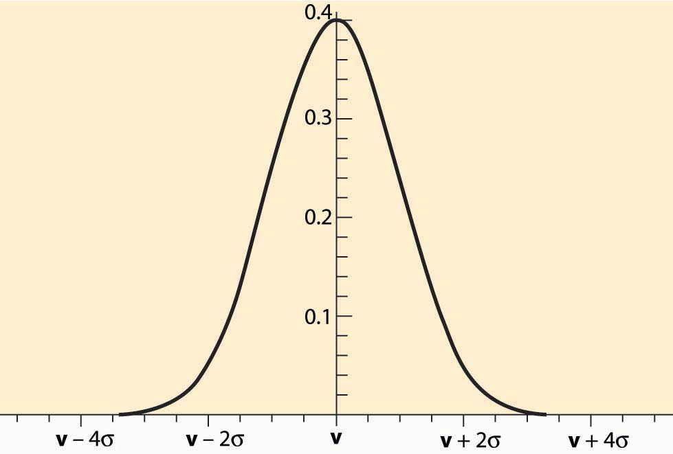

I paid too much for it, but it's worth it.
Sam Goldwyn
The analysis so far has been conducted under the restrictive assumption of private values. In most contexts, bidders are not sure of the actual value of the item being sold, and information held by others is relevant to the valuation of the item. If I estimate an antique to be worth $5,000, but no one else is willing to bid more than $1,000, I might revise my estimate of the value down. This revision leads bidders to learn from the auction itself what the item is worth.
The early bidders in the sale of oil lease rights in the Gulf of Mexico (the outer continental shelf) were often observed to pay more than the rights were worth. This phenomenon came to be known as the winner’s curseThe bidder who most overestimates the value of the object wins the bidding.. The winner’s curse is the fact that the bidder who most overestimates the value of the object wins the bidding.
Naïve bidders who don’t adjust for the winner’s curse tend to lose money because they win the bidding only when they’ve bid too high.
Figure 20.1 Normally Distributed Estimates
Auctions, by their nature, select optimistic bidders. Consider the case of an oil lease (right to drill for and pump oil) that has an unknown value v. Different bidders will obtain different estimates of the value, and we may view these estimates as draws from a normal distribution, like the one illustrated in Figure 20.1 "Normally Distributed Estimates". The estimates are correct on average, which is represented by the fact that the distribution is centered on the true value v. Thus, a randomly chosen bidder will have an estimate that is too high as often as it is too low, and the average estimate of a randomly selected bidder will be correct. However, the winner of an auction will tend to be the bidder with the highest estimate, not a randomly chosen bidder. The highest of five bidders will have an estimate that is too large 97% of the time. The only way the highest estimate is not too large is if all the estimates are below the true value. With 10 bidders, the highest estimate is larger than the true value with probability 99.9% because the odds that all the estimates are less than the true value is (½)10 = 0.1%. This phenomenon—that auctions tend to select the bidder with the highest estimate, and the highest estimate is larger than the true value most of the time—is characteristic of the winner’s curse.
A savvy bidder corrects for the winner’s curse. Such a correction is actually quite straightforward when a few facts are available, and here a simplified presentation is given. Suppose there are n bidders for a common value good, and the bidders receive normally distributed estimates that are correct on average. Let σ be the standard deviation of the estimates.The standard deviation is a measure of the dispersion of the distribution and is the square root of the average of the square of the difference of the random value and its mean. The estimates are also assumed to be independently distributed around the true value. Note that estimating the mean adds an additional layer of complexity. Finally, suppose that no prior information is given about the likely value of the good.
In this case, it is a straightforward matter to compute a correction for the winner’s curse. Because the winning bidder will generally be the bidder with the highest estimate of value, the winner’s curse correction should be the expected amount by which the highest value exceeds the average value. This can be looked up in a table for the normal distribution. The values are given for selected numbers n in Table 20.1 "Winner’s Curse Correction". This table shows, as a function of the number of bidders, how much each bidder should reduce his estimate of value to correct for the fact that auctions select optimistic bidders. The units are standard deviations.
Table 20.1 Winner’s Curse Correction
| n | 1 | 2 | 3 | 4 | 5 | 10 | 15 |
|---|---|---|---|---|---|---|---|
| WCC (σ) | 0 | .56 | .85 | 1.03 | 1.16 | 1.54 | 1.74 |
| n | 20 | 25 | 50 | 100 | 500 | 1000 | 10,000 |
| WCC (σ) | 1.87 | 1.97 | 2.25 | 2.51 | 3.04 | 3.24 | 3.85 |
For example, with one bidder, there is no correction because it was supposed that the estimates are right on average. With two bidders, the winner’s curse correction is the amount that the higher of two will be above the mean, which turns out to be 0.56σ, a little more than half a standard deviation. This is the amount that should be subtracted from the estimate to ensure that, when the bidder wins, the estimated value is correct, on average. With four bidders, the highest is a bit over a whole standard deviation. As is apparent from the table, the winner’s curse correction increases relatively slowly after 10 or 15 bidders. With a million bidders, it is 4.86σ.
The standard deviation σ measures how much randomness or noise there is in the estimates. It is a measure of the average difference between the true value and the estimated value, and thus the average level of error. Oil companies know from their history of estimation how much error arises in the company estimates. Thus, they can correct their estimates to account for the winner’s curse using their historical inaccuracies.
Bidders who are imperfectly informed about the value of an item for sale are subject to losses arising from the way auctions select the winning bidder. The winning bidder is usually the bidder with the highest estimate, and that estimate is too high on average. The difference between the highest estimate and the average estimate is known as the winner’s curse correction. The size of the winner’s curse correction is larger the more bidders there are, but it tends to grow slowly beyond a dozen or so bidders.
If the bidders have the same information on a common value item, they will generally not earn profits on it. Indeed, there is a general principle that it is the privacy of information, rather than the accuracy of information, that leads to profits. Bidders earn profits on the information that they hold that is not available to others. Information held by others will be built into the bid price and therefore not lead to profits.
The U.S. Department of the Interior, when selling offshore oil leases, not only takes an up-front payment (the winning bid) but also takes one-sixth of the oil that is eventually pumped. Such a royalty scheme links the payment made to the outcome and, in a way, shares risk because the payment is higher when there is more oil. Similarly, a book contract provides an author with an upfront payment and a royalty. Many U.S. Department of Defense (DOD) purchases of major weapons systems involve cost-sharing, where the payments made pick up a portion of the cost. Purchases of ships, for example, generally involve 50%–70% cost sharing, which means the DOD pays a portion of cost overruns. The contract for U.S. television broadcast rights for the Summer Olympics in Seoul, South Korea, involved payments that depended on the size of the U.S. audience.
Royalties, cost-sharing, and contingent payments generally link the actual payment to the actual value, which is unknown at the time of the auction. Linkage shares risk, but linkage does something else, too. Linkage reduces the importance of estimates in the auction, replacing the estimates with actual values. That is, the price a bidder pays for an object, when fully linked to the true value, is just the true value. Thus, linkage reduces the importance of estimation in the auction by taking the price out of the bidder’s hands, at least partially.
The linkage principleThe expected price in an auction to sell rises the more the price is linked to the actual value.The linkage principle, and much of modern auction theory, was developed by Paul Milgrom (1948–). states that in auctions where bidders are buyers, the expected price rises the more the price is linked to the actual value. (In a parallel fashion, the expected price in an auction where bidders are selling falls.) Thus, linking price to value generally improves the performance of auctions. While this is a mathematically deep result, an extreme case is straightforward to understand. Suppose the government is purchasing by auction a contract for delivery of 10,000 gallons of gasoline each week for the next year. Suppliers face risk in the form of gasoline prices; if the government buys at a fixed price, the suppliers’ bids will build in a cushion to compensate for the risk and for the winner’s curse. In addition, because their estimates of future oil prices will generally vary, they will earn profits based on their private information about the value. In contrast, if the government buys only delivery and then pays for the cost of the gasoline, whatever it might be, any profits that the bidders earned based on their ability to estimate gasoline prices evaporate. The overall profit level of bidders falls, and the overall cost of the gasoline supply can fall. Of course, paying the cost of the gasoline reduces the incentive of the supplier to shop around for the best price, and that agency incentive effect must be balanced against the reduction in bidder profits from the auction to select a supplier.